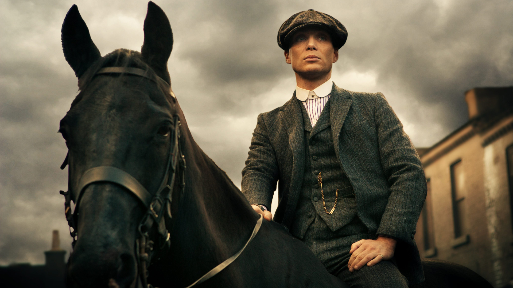
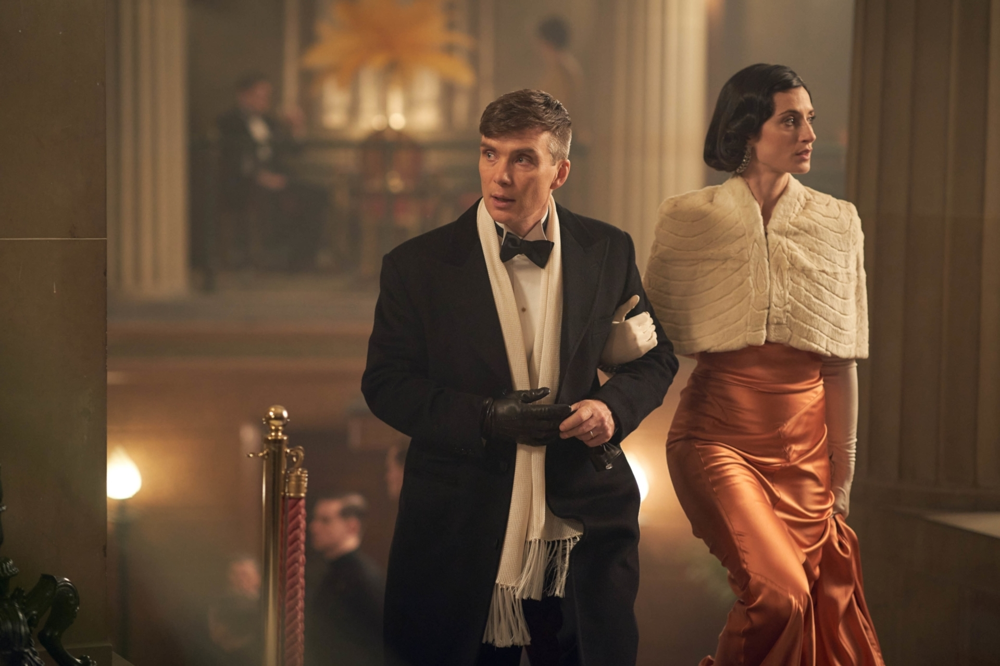
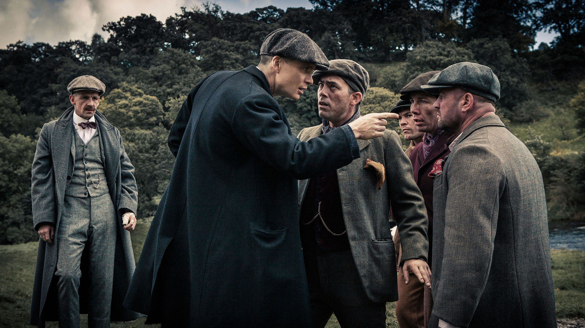
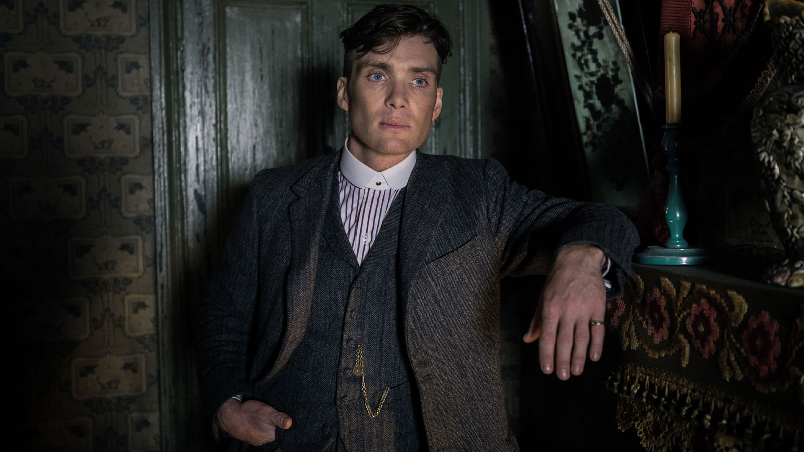
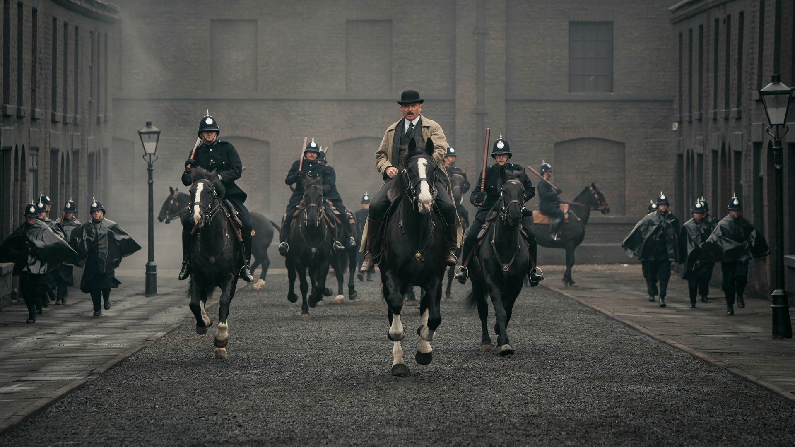
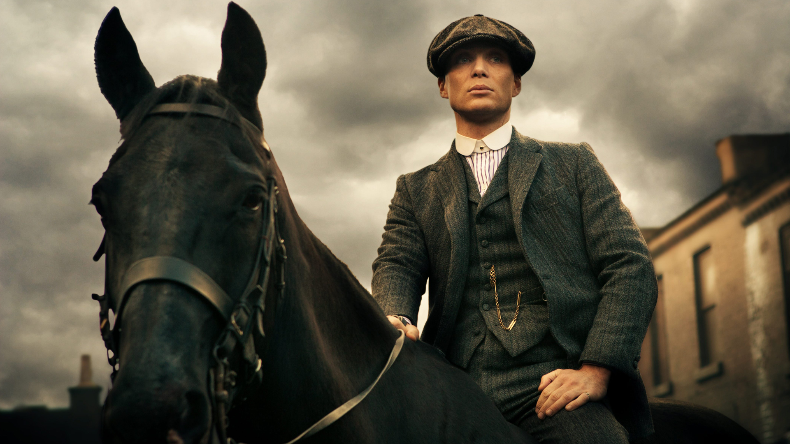
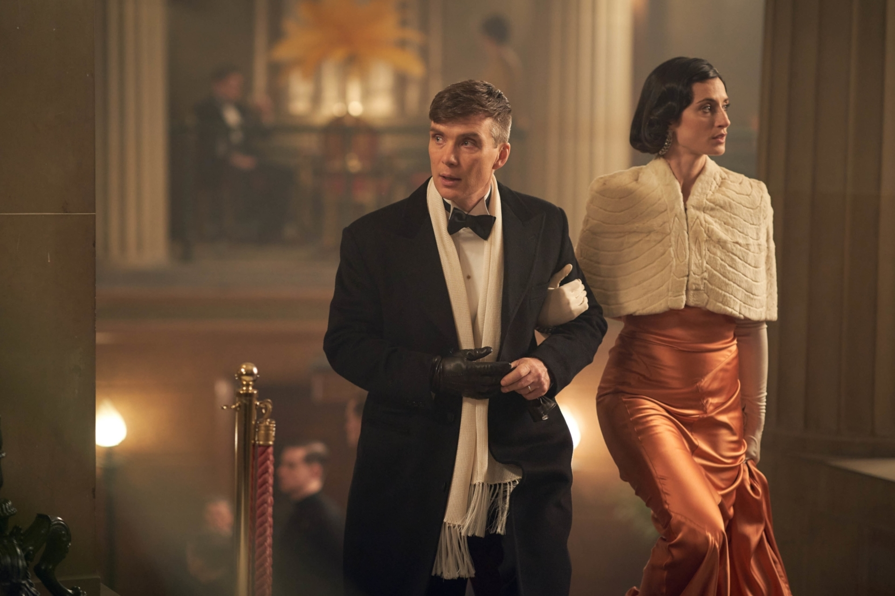
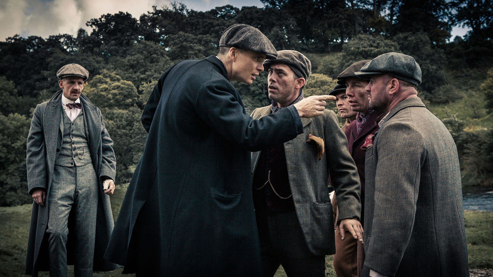
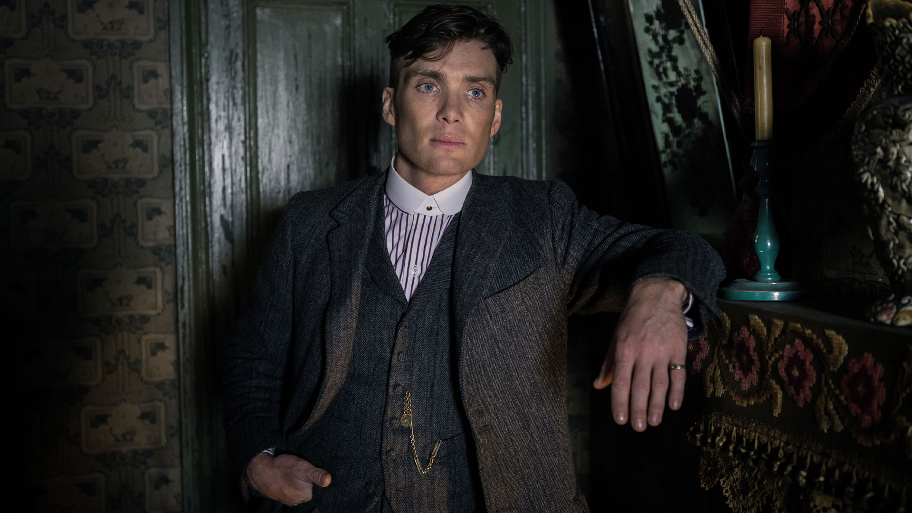
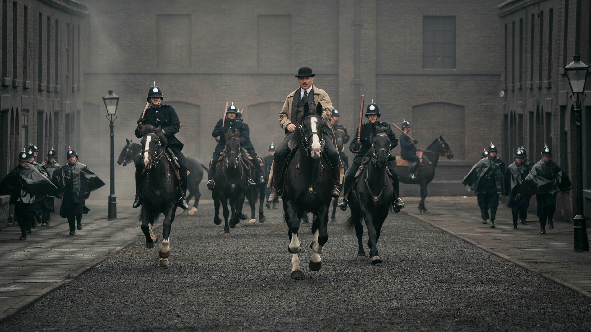

Peaky Blinders é uma série de televisão britânica de drama criminal criada por Steven Knight. A trama se passa na Inglaterra pós-Primeira Guerra Mundial e segue a história da família Shelby, liderada pelo carismático e implacável Tommy Shelby, interpretado por Cillian Murphy.